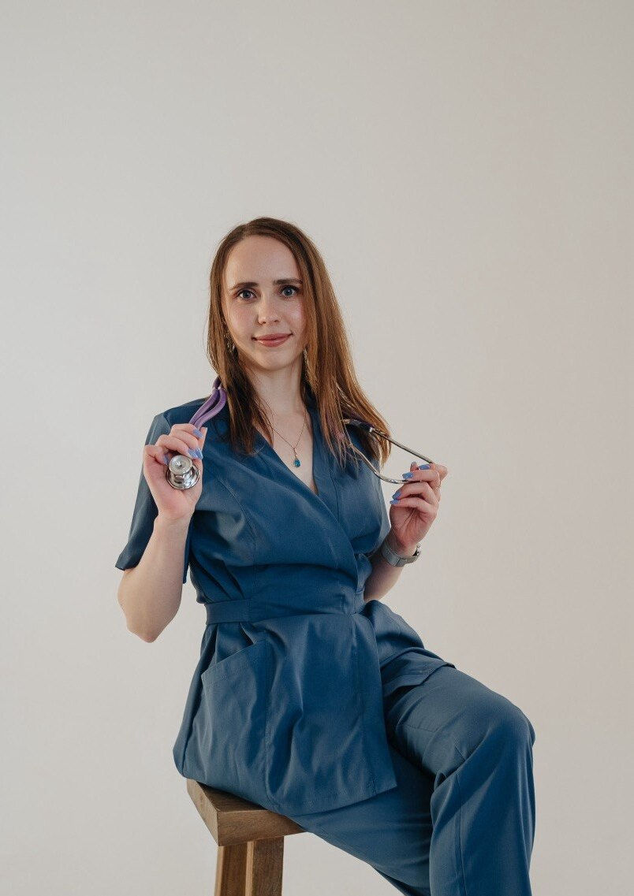

Вес и мышечная масса
Консультирование по вопросам питания для снижения веса или набора мышечной массы — через индивидуальный рацион.

нутрициолог · дипломированный врач-педиатр
Помогаю выстроить рацион под вашу цель и возраст — на принципах доказательной медицины, без жёстких диет. От снижения веса до питания всей семьи.

обо мне
Здравствуйте, меня зовут Екатерина. Я нутрициолог и дипломированный врач-педиатр. Я знаю, как ухаживать и общаться с пациентами и нести ответственность за правильно выполненные назначения.
В работе опираюсь лишь на принципы доказательной медицины и клинические рекомендации. Использую комплексный подход и индивидуальный рацион — для снижения веса или набора мышечной массы, коррекции образа жизни и снижения рисков заболеваний.
Педиатрическая подготовка помогает мне максимально безопасно и эффективно работать с растущим организмом. Я даю вам поддержку и инструменты, чтобы результат оставался с вами надолго.
направления
Консультирование по вопросам питания для снижения веса или набора мышечной массы — через индивидуальный рацион.
Коррекция образа жизни, чтобы снизить риски развития заболеваний, и помощь в нормализации сна.
Питание беременных и кормящих женщин, а также питание пожилых людей с учётом их потребностей.
Коррекция питания детей и подростков. Педиатрическая подготовка помогает безопасно работать с растущим организмом.
отзывы
«Переход к здоровому питанию был очень мягким, без строгих ограничений. Через месяц ушла усталость, а анализы стали лучше.»
«Наконец наладился сон и появилась энергия днём. Всё разложено по полочкам — есть понятный план и спокойствие.»
«Обратились по питанию для ребёнка. Екатерина помогла без давления и стресса — сын стал лучше есть и реже болеть.»
«Вела меня во время беременности и после родов. Чувствовала заботу и поддержку на каждом этапе. Рекомендую всем мамам!»
обращение
Напишите мне — подберём формат и начнём путь к результату, который останется с вами надолго.